We now come to the central definition of stable homotopy theory: that of a stable \(\infty \)-category. To motivate the definition, let us take a look at some of the features of the category \(\Ab \) of abelian groups which make it suitable for doing homotopical algebra:
- (1)
-
The category \(\Ab \) is additive: the direct sum \(A \oplus B\) of two abelian groups is both a product and a coproduct in \(\Ab \), and the hom sets \(\Hom _{\Ab }(A,B)\) inherit the structure of abelian groups;
- (2)
-
The category \(\Ab \) admits kernels and cokernels;
- (3)
-
There is a notion of short exact sequence: given a sequence of abelian groups \[ 0 \to A \xhookrightarrow {i} B \overset {p}{\twoheadrightarrow } C \to 0 \] satisfying \(pi = 0\) with \(i\) a monomorphism (i.e. an injective map) and \(p\) an epimorphism (i.e. a surjective map), the map \(i\) exhibits \(A\) as a kernel of \(p\) if and only if the map \(p\) exhibits \(C\) as a cokernel of \(A\).
Categories with properties (1)-(3) are called abelian categories; we will study them more closely in Subsection 6.1.1. The definition of stable \(\infty \)-categories closely mirrors that of abelian categories:
Definition 4.2.1 (Stable \(\infty \)-category). An \(\infty \)-category \(C\) is called stable if:
- (1)
-
The \(\infty \)-category \(C\) is pointed;
- (2)
-
The \(\infty \)-category \(C\) admits fibers and cofibers;
- (3)
-
A nullsequence \(X \xrightarrow {f} Y \xrightarrow {g} Z\) in \(C\) is a fiber sequence if and only if it is a cofiber sequence.
We refer to the nullsequences in (3) as exact sequences.1 A functor \(F\colon C \to D\) between two stable \(\infty \)-categories is called exact if it preserves the zero object and sends exact sequences to exact sequences. Given two stable \(\infty \)-categories \(C\) and \(D\), we denote by \[ \Fun ^{\ex }(C,D) \quad \subseteq \quad \Fun (C,D) \] the full subcategory spanned by the exact functors.
Note that this definition differs in two crucial ways from the definition of an abelian category. First, in condition (3) there is no requirement for \(f\) and \(g\) to be monomorphisms or epimorphisms; they are allowed to be arbitrary morphisms in \(C\). Second, in condition (1) we are merely assuming that \(C\) is pointed, and are not a priori requiring any additive structure. In some sense, condition (3) has absorbed the requirement of additivity: as we will show in Lemma 4.2.17, stable \(\infty \)-categories are automatically additive.
While the definition of stable \(\infty \)-categories we gave is the one that most closely resembles the definition of abelian categories, there are various equivalent characterizations of stable \(\infty \)-categories that we will frequently use.
Theorem 4.2.2. For a pointed \(\infty \)-category \(C\), the following conditions are equivalent:
- (1)
-
The \(\infty \)-category \(C\) admits pushouts and pullbacks, and a commutative square

in \(C\) is a pushout square if and only if it is a pullback square.
- (2)
-
The \(\infty \)-category \(C\) is stable;
- (3)
-
The \(\infty \)-category \(C\) admits fibers and the loop functor \(\Omega \colon C \to C\) is an equivalence;
- (4)
-
The \(\infty \)-category \(C\) admits cofibers and the suspension functor \(\Sigma \colon C \to C\) is an equivalence.
Proof. It is clear that (1) implies (2) by taking \(W = 0\). If we assume (2), then the fiber sequence
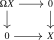
is by assumption also a pushout square and thus the counit map \(\Sigma \Omega X \to X\) is an equivalence. Similarly the unit map \(X \to \Omega \Sigma X\) is an equivalence. It follows that \(\Sigma \) and \(\Omega \) are inverse equivalences, so that (3) and (4) hold.
We now show that (3) implies (1); applying the argument to \(C\catop \) will then show that also (4) implies (1), finishing the argument. We will first show that \(C\) admits pushouts and that pushout squares agree with pullback squares. To this end, consider the full subcategory \[ P \subseteq \Fun ([1] \times [1], C) \] spanned by the pullback squares. We then have the following claim:
Claim: The restriction functor \(P \to \Fun (\;\pushout \;,C)\) is an equivalence.
Proof of claim: To construct an inverse, consider a diagram \(z \leftarrow x \rightarrow y\) in \(C\), and consider the following pullback diagram (ignoring the dashed morphisms):
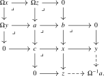
Note that each of the pullbacks that appear here may be obtained as a fiber, hence is assumed to exist in \(C\). More explicitly, starting from the span \(z \leftarrow x \to y\), set \[ b := \fib (x \to y), \qquad c := \fib (x \to z). \] Then define \(a\) as the fiber of the composite \(b \to x \to z\). The nullhomotopy of \(a \to b \to x \to z\) induces a map \(a \to c\), and the square
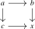
is a pullback by the pasting law. The other displayed pullback squares are obtained in the same way from the fiber sequences \(b \to x \to y\), \(c \to x \to z\), and \(a \to b \to z\). The construction is functorial in the input span because each step is obtained by applying the fiber construction to a functorially specified morphism, together with the universal maps in its defining pullback square. Thus a morphism of spans induces compatible morphisms of all the objects in the displayed diagram. We now claim that an inverse to the restriction functor is given by

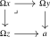
Note that this functor does indeed land in \(P\) since the equivalence \(\Omega ^{-1}\colon C \iso C\) preserves pullback squares. Furthermore, it provides an extension of the original diagram, hence defines a right inverse. Finally, if we start with any pullback square, we may rewrite it in the form
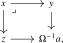
and we see that the above procedure recovers the original pullback square, showing that it is also a left inverse. This finishes the proof of the claim. □
We will now use the claim to produce pushouts in \(C\). Consider again a diagram \(z \leftarrow x \rightarrow y\) in \(C\), and use the claim to extend it uniquely to a pullback diagram:
We claim that this square is also a pushout square in \(C\). Indeed, for every other object \(a\) in \(C\) we have natural equivalences
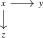
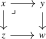
where the first equivalence is induced from the equivalence \(P \simeq \Fun (\pushout ,C)\), whereas the second equivalence holds because \([1] \times [1]\) has a terminal object \((1,1)\), so that the functor \(\ev _{(1,1)}\colon \Fun ([1] \times [1],C) \to C\) is left adjoint to the constant diagram functor \(C \to \Fun ([1] \times [1],C)\). In particular, we see that \(C\) admits pushouts, and that every pullback square is a pushout square.
Note that in particular \(C\) admits cofibers and that \(\Sigma \colon C \to C\) is an equivalence, so applying the above logic to \(C\catop \) we see that \(C\) also admits all pullbacks, and that every pushout square is a pullback square. We conclude that condition (1) is satisfied, finishing the proof. □
Terminology 4.2.3. Let \(C\) be a stable \(\infty \)-category. We say that a commutative square
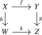
is an exact square if it is a pullback square, or equivalently a pushout square.
Warning 4.2.4. Despite the similarity in their definitions, abelian categories are never stable \(\infty \)-categories: the loop functor \(\Omega \colon \Aa \to \Aa \) in a pointed 1-category \(\Aa \) is necessarily the zero-functor, hence is only an equivalence if \(\Aa \) is the trivial category.
Nevertheless, every abelian category \(\Aa \) embeds fully faithfully into a stable \(\infty \)-category \(\D (\Aa )\), called its derived \(\infty \)-category, to be introduced in Section 6.1 below. The inclusion \(\Aa \hookrightarrow \D (\Aa )\) sends short exact sequences in \(\Aa \) to exact sequences in \(\D (\Aa )\).
Proposition 4.2.5. Let \(F\colon C \to D\) be a functor between stable \(\infty \)-categories. Then the following are equivalent:
- (1)
-
The functor \(F\) is exact;
- (2)
-
The functor \(F\) is right exact, i.e. preserves initial objects and pushouts;
- (3)
-
The functor \(F\) is left exact, i.e. preserves terminal objects and pullbacks.
Proof. Since \(C\) and \(D\) are pointed, it is clear that \(F\) is pointed in each of the three cases. The argument from Theorem 4.2.2 shows that a pointed functor preserves exact sequences if and only if it preserves pushout squares if and only if it preserves pullback squares. □
Remark 4.2.6. Conditions (1)-(3) on \(F\) are also equivalent to \(F\) preserving loop objects, or equivalently suspensions; see Corollary 16.5.6.
Since exact functors are clearly closed under composition, the following definition makes sense:
Definition 4.2.7. We define the \(\infty \)-category of small stable \(\infty \)-categories as the (non-full) subcategory \[ \Cat ^{\mathrm {st}}_{\infty } \subseteq \Cat _{\infty } \] whose objects are the stable \(\infty \)-categories and whose morphisms are the exact functors between them.
Lemma 4.2.8. The \(\infty \)-category \(\Cat ^{\st }_\infty \) admits small limits, and the inclusion \(\Cat ^{\st }_{\infty } \hookrightarrow \Cat _{\infty }\) preserves small limits.
Proof. Let \(C_{\bullet }\colon K \to \Cat ^{\st }_{\infty }\) be a diagram of stable \(\infty \)-categories and exact functors. By Corollary 23.5.6, the limit \(\lim _{k \in K} C_k\) admits an initial and terminal object, and admits pushouts and pullbacks. Furthermore, each of the forgetful functors \(\lim _{k \in K} C_k \to C_k\) preserve these (co)limits. Stability of \(\lim _{k \in K} C_k\) now follows directly from the stability of the \(\infty \)-categories \(C_k\) for all \(k \in K\). □
Exercise 4.2.9. Let \(I\) and \(C\) be \(\infty \)-categories and assume \(C\) is stable. Show that also \(\Fun (I,C)\) is stable. Hint: Use Lemma 21.2.8.
4.2.1 Shift functors
Let \(C\) be a stable \(\infty \)-category. Since \(\Sigma \colon C \to C\) and \(\Omega \colon C \to C\) are inverse equivalences, we can define shift functors for any integer \(n\).
Definition 4.2.10 (Shift functors). For \(n \in \mathbb {Z}\), we define the \(n\)-th shift functor \([n]\colon C \to C\) by \[ [n] := \begin {cases} \Sigma ^n & \text {if } n \geq 0 \\ \Omega ^{-n} & \text {if } n \leq 0 \end {cases}. \] The two formulas agree for \(n=0\).
Warning 4.2.11. While the shift notation is convenient, it should be used with care to avoid sign issues.
For integers \(n\) and \(m\), one may identify the composite \([n] \circ [m]\) with \([n + m]\) by explicitly checking each of the four cases. In particular, this shows that \([n] \circ [m]\) is equivalent to \([m] \circ [n]\): both are shifting by the sum \(m + n\).
The subtlety is that there are several inequivalent ways to exhibit this identification. For example, since \([n]\colon C \to C\) is exact, it commutes with \([m]\), giving another identification \([n] \circ [m] \simeq [m] \circ [n]\). To see that this identification differs from the previous one, let us consider the case \(n = m = 1\), so that both shift functors are simply the suspension functor. The first identification is then nothing but the identity on \(\Sigma ^2\colon C \to C\). However, the second identification \(\Sigma ^2 \simeq \Sigma ^2\) is the one coming from commutation of \(\Sigma \) with itself. To see that these are not the same, consider the case \(C = \An _*\), for which the commutation map is obtained by forming smash products with the swap map \(S^1 \wedge S^1 \iso S^1 \wedge S^1\) from Definition 2.4.10. Since this map has degree \(-1\), it is not homotopic to the identity.
We will now discuss various basic facts about stable \(\infty \)-categories that illustrate their general behavior.
Lemma 4.2.12. If \(X \xrightarrow {f} Y \xrightarrow {g} Z\) is an exact sequence in a stable \(\infty \)-category \(C\), then for any integer \(n\), the sequence \[ X[n] \xrightarrow {f[n]} Y[n] \xrightarrow {g[n]} Z[n] \] is also exact. Furthermore, the sequences \[ Y \xrightarrow {g} Z \to X[1] \qquadtext { and } Z[-1] \to X \xrightarrow {f} Y \] are exact sequences.
Proof. Since \([n]\) is an equivalence, it preserves finite limits and colimits, hence exact sequences. The second statement follows from the following pushout/pullback diagrams:
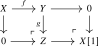
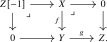
Here we used the pasting law for pushouts/pullbacks to identify the objects \(X[1]\) and \(Z[-1]\). □
Lemma 4.2.13. Let \(f\colon X \to Y\) be a morphism in a stable \(\infty \)-category. Then there is an isomorphism \(\cofib (f) \cong \fib (f)[1]\).
Proof. Consider the following diagram:
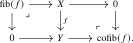
The left square is a pullback square, and hence by stability also a pushout square. The right square is by definition a pushout square. Hence the outer rectangle is a pushout square, giving the desired isomorphism \(\cofib (f) \simeq \Sigma (\fib (f)) = \fib (f)[1]\). □
Lemma 4.2.14. Let \(f\colon X \to Y\) be a morphism in a stable \(\infty \)-category \(C\). The following are equivalent:
- (1)
-
The morphism \(f\) is an isomorphism;
- (2)
-
We have \(\cofib (f) \simeq 0\);
- (3)
-
We have \(\fib (f) \simeq 0\).
Proof. We show that (1) is equivalent to (2); the equivalence between (1) and (3) is dual. Consider the following commutative square:
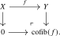
Since this square is both a pushout square as well as a pullback square and isomorphisms are closed under pushouts and pullbacks, we see that \(f\) is an isomorphism if and only if the map \(0 \to \cofib (f)\) is an isomorphism, proving the claim. □
4.2.2 The additive structure of stable \(\infty \)-categories
Stable \(\infty \)-categories possess a strong additive structure.
Definition 4.2.15 ((Semi)additive \(\infty \)-category). An \(\infty \)-category \(C\) is semiadditive if it has a zero object, finite products, finite coproducts, and the canonical map \[ \begin {psmallmatrix} \id _X & 0 \\ 0 & \id _Y \end {psmallmatrix} \colon X \sqcup Y \to X \times Y \] is an isomorphism. We write \(X \oplus Y\) for the resulting biproducts. We say that \(C\) is additive if, in addition, the shear map \[ \begin {psmallmatrix} \id _X & \id _X \\ 0 & \id _X \end {psmallmatrix}\colon X \oplus X \to X \oplus X \] is an equivalence.
Semiadditivity is sometimes also called preadditivity.
Remark 4.2.16. For objects \(X,Y\) in a semiadditive \(\infty \)-category \(C\), we may equip \(\pi _0\Hom _C(X,Y)\) with the structure of an abelian monoid: given morphisms \(f,g\colon X \to Y\), we define their sum \(f + g\) as the following composite: \[ X \xrightarrow {(\id ,\id )} X \oplus X \xrightarrow {f \oplus g} Y \oplus Y \xrightarrow {{\id \choose \id }} Y. \] We leave it to the reader to check that this is indeed unital, associative and commutative. Then \(C\) is additive if and only if \(\pi _0\Hom _C(X,Y)\) is in fact a group. In particular, for every morphism \(f\colon X \to Y\) we may form its negative \(-f\colon X \to Y\) which satisfies \(f + (-f) = 0\).
Proof. Stable \(\infty \)-categories have zero objects and pullbacks/pushouts, and therefore finite products (\(X \times Y = X \times _0 Y\)) and coproducts (\(X \sqcup Y = X \sqcup _0 Y\)). Additivity of \(C\) then amounts to showing that for all objects \(X\) and \(Y\) in \(C\), the two commutative squares
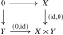
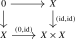
are exact. To see this, we consider the following two diagrams:
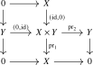
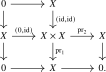
In both cases, the right bottom square, the bottom rectangle and the left rectangle are pullback squares, and hence by the pasting law for pullback diagrams also the upper left square is exact. This finishes the proof. □
Recall that the splitting lemma provides equivalent conditions for a short exact sequence in an abelian category to be a split short exact sequence. The following is an analogue of the splitting lemma for stable \(\infty \)-categories:
Exercise 4.2.18 (Splitting lemma). Let \(X \xrightarrow {i} Y \xrightarrow {p} Z\) be an exact sequence in a stable \(\infty \)-category \(C\). The following are equivalent:
- (1)
-
The map \(i\) admits a retraction \(r\colon Y \to X\) (i.e., \(ri \simeq \id _X\));
- (2)
-
The map \(p\) admits a section \(s\colon Z \to Y\) (i.e., \(ps \simeq \id _Z\));
- (3)
-
There is an isomorphism \(Y \cong X \oplus Z\) making the following diagram commute:
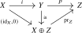
Hint. Given a retraction of \(i\), paste the two resulting pushout squares to identify \(Y\) with \(X\oplus Z\). The argument starting from a section of \(p\) is dual.
Exercise 4.2.19 (Recognizing exact squares). Let \(C\) be a stable \(\infty \)-category and consider a commutative square in \(C\):
The following conditions are equivalent:
- (1)
-
The square is exact;
- (2)
-
The sequence \(X \xrightarrow {(f,u)} Y \oplus Z \xrightarrow {{v \choose -g}} W\) is an exact sequence.
Hint. Compare the original square with the exactness of the displayed sequence by means of the diagonal \(W\to W\oplus W\) and the difference map \(W\oplus W\to W\). The necessary comparison square is exact because its associated shear map is an isomorphism.
4.2.3 Finite limits and colimits
From the fact that stable \(\infty \)-categories admit zero objects, pushouts and pullbacks, we may deduce that they in fact admit all finite limits and colimits.
Definition 4.2.20 (Finite \(\infty \)-categories). We denote by \[ \Cat ^{\fin }_{\infty } \subseteq \Cat _{\infty } \] the smallest full subcategory which contains the \(\infty \)-categories \(\emptyset \), \(*\) and \([1]\), and which is closed under pushouts of \(\infty \)-categories. A small \(\infty \)-category \(I\) is called finite if it is contained in \(\Cat ^{\fin }_{\infty }\).
Remark 4.2.21. It is proved by [Volpe (2025), Proposition 2.4] that this model-independent definition of finite \(\infty \)-categories is compatible with the definition used in quasicategory theory: an \(\infty \)-category is finite if and only if it is the image of a finite simplicial set under the associated \(\infty \)-category functor \(\ac \colon \sSet \to \Cat _{\infty }\) from Construction 1.8.11.
Example 4.2.22. The following \(\infty \)-categories are finite:
- The \(\infty \)-categories \(\emptyset \), \(*\) and \([1]\);
- The \(\infty \)-category \(* \sqcup *\);
- The \(\infty \)-categories \(\pullback \) and \(\pushout \);
- The \(\infty \)-categories \([n]\).
Remark 4.2.23. There is a functor \((-)\catop \colon \Cat _{\infty } \to \Cat _{\infty }\) implementing the assignment \(C \mapsto C\catop \). This functor is an equivalence, hence in particular preserves pushouts and full subcategories. Since each of the \(\infty \)-categories \(\emptyset \), \(*\) and \([1]\) are equivalent to their opposites, it follows that an \(\infty \)-category \(C\) is finite if and only if its opposite \(C\catop \) is finite.
Definition 4.2.24 (Left exact \(\infty \)-categories). An \(\infty \)-category \(C\) is called left exact, or said to admit finite limits, if it admits all \(I\)-indexed limits for all finite \(\infty \)-categories \(I\). Similarly, a functor \(F\colon C \to D\) between left exact \(\infty \)-categories is called left exact if it preserves \(I\)-indexed limits for all \(I \in \Cat ^{\fin }_{\infty }\). We denote by \[ \Cat ^{\lex }_{\infty } \quad \subseteq \quad \Cat _{\infty } \] the subcategory consisting of the left exact \(\infty \)-categories and left exact functors. Given two left exact \(\infty \)-categories \(C\) and \(D\), we denote by \[ \Fun ^{\lex }(C,D) \quad \subseteq \quad \Fun (C,D) \] the full subcategory spanned by the left exact functors.
One dually obtains a notion of right exactness in terms of finite colimits.
Theorem 4.2.25 (Lurie (2009), Corollaries 4.4.2.4 and 4.4.2.5).
- (1)
-
An \(\infty \)-category \(C\) admits finite limits if and only if it has a terminal object and admits pullbacks.
- (2)
-
A functor \(F\colon C \to D\) is left exact if and only if it preserves terminal objects and pullbacks.
Dually \(C\) has finite colimits if and only if it has an initial object and admits pushouts, and \(F\) preserves finite colimits if and only if it preserves initial objects and pushouts.
Proof sketch. One direction is clear. The other direction needs the non-trivial fact that when the \(\infty \)-category \(I\) can be written as a colimit \(I = \colim _{j} I_j\), we get an alternative description of \(\lim _{i \in I} F(i)\) as \(\lim _{j \in J\catop } \lim _{i \in I_j} F(i)\). (See Theorem 21.2.11 for a more precise formulation). □
Corollary 4.2.27. A functor \(F\colon C \to D\) between stable \(\infty \)-categories is exact if and only if it is left exact if and only if it is right exact: we have equalities \[ \Fun ^{\ex }(C,D) \quad = \quad \Fun ^{\lex }(C,D) \quad = \quad \Fun ^{\rex }(C,D) \] as full subcategories of \(\Fun (C,D)\).
We record an alternative characterization of stable \(\infty \)-categories, due to Moritz Groth [Groth (2016)]:
Proposition 4.2.28. An \(\infty \)-category \(C\) is stable if and only if it has all finite limits and colimits and finite limits commute with finite colimits.
Proof. Let \(C\) be a stable \(\infty \)-category. If \(I\) is a finite \(\infty \)-category, then \(C\) has \(I\)-indexed colimits by the previous corollary, hence there is a functor \(\colim \colon \Fun (I,C) \to C\). Its domain is also stable and \(\colim \) preserves finite colimits, because colimits commute with colimits. So the functor is exact and hence preserves finite limits as well.
Conversely, assume that \(C\) is finitely complete and cocomplete and that finite limits commute with finite
colimits in \(C\). Considering the empty category, the fact that empty limits commute with empty colimits
expresses that \(C\) is pointed. To show that \(C\) is stable, consider for every \(X \in C\) the following diagram: \begin {equation*} 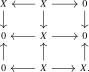
Notes
Generated from the authoritative LaTeX source.